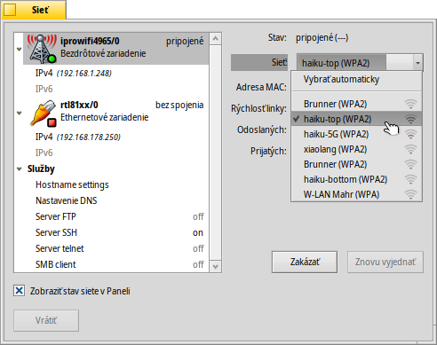
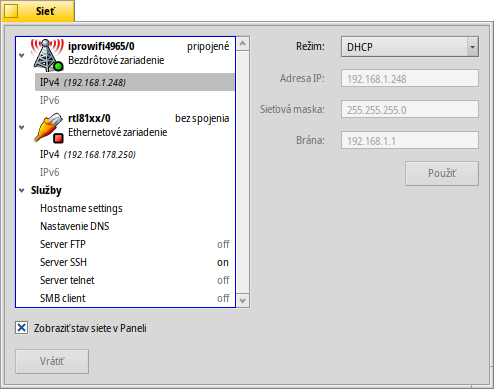
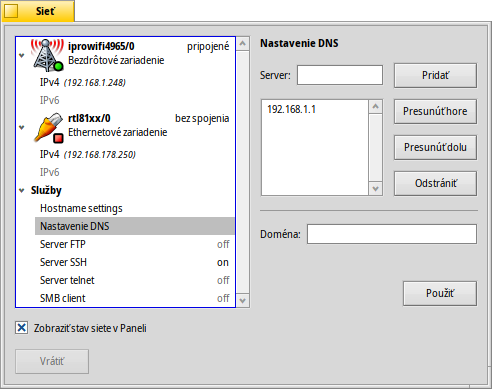
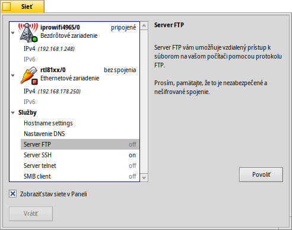

Sieť
Sieť
| Panel: | ||
| Umiestnenie: | /boot/system/preferences/Network | |
| Nastavenia: | /boot/system/settings/network/ |
Nastavenie Sieť je panel, kde môžete na jednom mieste nastaviť všetky dostupné sieťové zariadenia a služby. Vľavo je zbaliteľný zoznam vašich zariadení a služieb. Vpravo sú informácie alebo nastavenia k vybranej položke.
Dolu nájdete zaškrtávacie pole . vráti nastavenia, ktoré boli aktívne predtým, než ste otvorili tento panel.
Zariadenia
Tu vidíme bezdrôtové zariadenie používajúce ovládač iprowifi4965. Z roletového menu zvolíte bezdrôtovú sieť (WLAN), ku ktorej sa chcete pripojiť. Pri každom názve siete v menu sa zobrazí malá ikona predstavujúca silu signálu.
Po vybraní bezdrôtovej siete sa Haiku pri každom spustení systému pokúsi k nej automaticky pripojiť. Vyberte a pokúsi sa pripojiť k bezdrôtovej sieti s najlepším signálom nablízku.
Ak sa pripájate k chránenej sieti, zobrazí sa výzva na zadanie hesla a či chcete povoliť toto pripojenie iba jednorazovo alebo vždy. Ak zvolíte druhú možnosť, heslo sa uloží a v budúcnosti vás už Haiku nebude obťažovať, aby ste ho znova zadali.
Tlačidlá dolu vám umožňujú zariadenie alebo spojenie.
Pod zariadením nájdete zoznam dostupných protokolov, IPv4 a IPv6:
Z kontextového menu nastavíte režim prideľujúci dôležité parametre siete , a . Môžete zvoliť ak chcete konfiguráciu prijímať dynamicky z vašej siete (zo smerovača a pod.) alebo ich zadať sami zvolením a stlačením tlačidla po vyplnení údajov.
Nastavenia tetheringu sú podobné, samozrejme bez roletového menu s pripojením k bezdrôtovej sieti.
Služby
Nastavenia DNS
Ak používate DHCO, IP adresu servera DNS a doménu za vás vyplní sieť (smerovač a pod.). Môžete pridať a odstrániť ďalšie servery DNS a upraviť ich prioritu tým, že ich presuniete hore alebo dolu v zozname pomocou tlačidiel napravo.
Stlačením aktivujete vaše nové nastavenia.
FTP, SSH, Telnet
Haiku poskytuje niekoľko serverov, ktoré môžete alebo . Na pravej strane okna nájdete informácie o konkrétnom serveri, ktoré by ste mali vedieť: Servery FTP a Telnet server sú nezabezpečené a nešifrované. Štandardne sú vypnuté a mali by ste ich zapnúť iba ak ste si vedomí ich bezpečnostného rizika.
Súbory nastavení
Nastavenia siete nájdete v priečinku /system/settings/network/. Za bežných okolností vás nemusia zaujímať, možno len ak ich chcete zmazať, aby ste mohli začať s čistým štítom v prípade, že sa niečo veľmi pokazí...
Jeden súbor však môže byť veľmi užitočný, obzvlášť ak pracujte z Terminálu. Súbor hosts vám umožňuje definovať aliasy konkrétnych IP adries v sieti. Napríklad:
127.0.0.1 localhost #loopback 192.168.178.3 NAS #Synology 192.168.178.102 XIOS #Mediaplayer
Okrem zariadenia loopback smerujúceho na lokálny počítač (localhost) mám uvedenú IP adresu môjho úložiska Synology NAS pod názvom „NAS“ a môj prehrávač multimédií pod názvom „XIOS“. Ak chcem pracovať so svojím sieťovým úložiskom, nemusím si pamätať jeho IP adresu, ale môžem jednoducho zadať:
ftp NAS